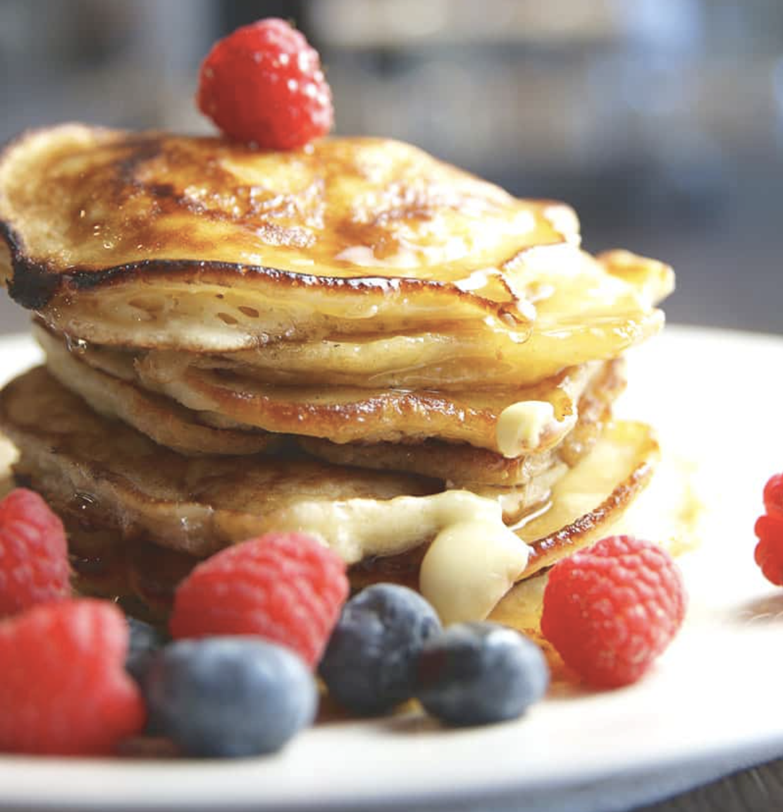

Basic Butter Pancakes

Description
A pancake is a flat cake, often thin and round, prepared from
a starch-based batter that may contain eggs, milk, and butter
and cooked on a hot surface such as a griddle or frying pan, often
frying with oil or butter. It is a type of batter bread.
Basic Butter Pancakes is a 10 minute recipe that is all you need
to get the pergect buttery pancakes!
Ingredients
- 1 cup flour
- 2 teaspoons baking powder
- 1 tablespoon salt
- 1/2 teaspoon salt
- 1 cup milk
- 1 egg
- 2 tablespoons unsalted butter
- extra butter for pan
Instructions
- In small bowl mix flour, baking powder, sugar, salt.
- In separate bowl mix milk, egg, and butter.
- Combine contents of both bowls together.
- On a stovetop, heat and grease the pan with butter.
- Pour 1/4 cup pancake mixture to pan.
- Flip pancake after bubbles have formed (1-2 minutes).